1 ミカゼ
1/30｜2026/05/24
3MDCF
多了哪些牌
+1+1+1 +1
+1
+1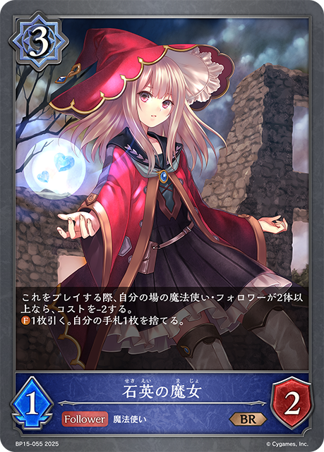
+1少了哪些牌
-2-1-1-1
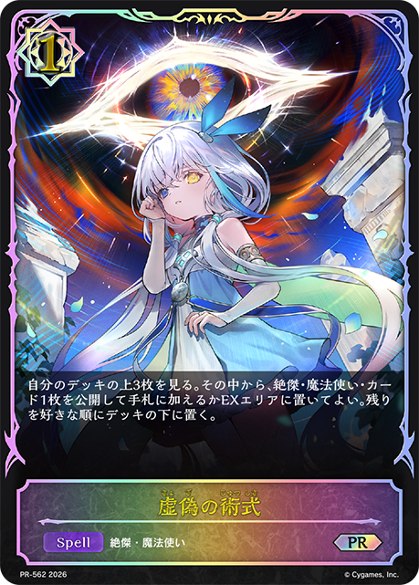
主BP20-049/PR-562：虚偽の術式主卡组 × 3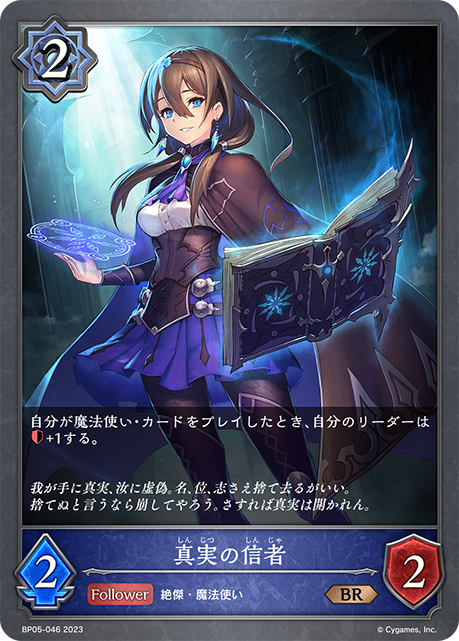
主BP05-046/BP05-P20：真実の信者主卡组 × 1主BP11-048/PR-304：レヴィールの保安官補主卡组 × 2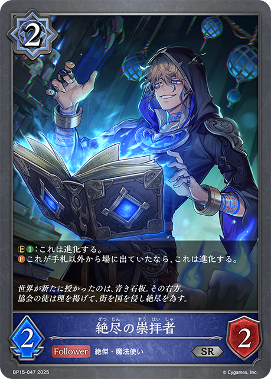
主BP15-047/BP15-P10：絶尽の崇拝者主卡组 × 3 主BP20-038/BP20-SL10：真実の継承者・ヴェハリヤー主卡组 × 3
主BP20-038/BP20-SL10：真実の継承者・ヴェハリヤー主卡组 × 3 主BP20-053/BP20-P27：真実の肯定者主卡组 × 3
主BP20-053/BP20-P27：真実の肯定者主卡组 × 3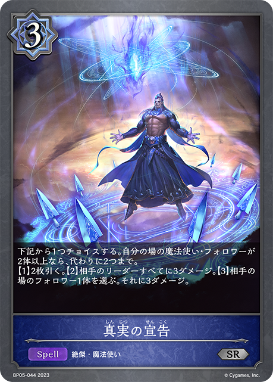
主BP05-044/BP05-P18：真実の宣告主卡组 × 3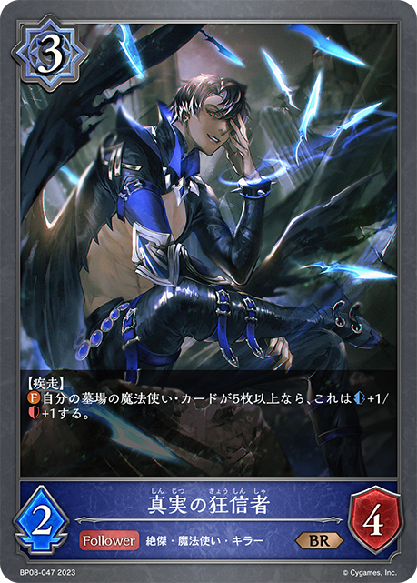
主BP08-047：真実の狂信者主卡组 × 2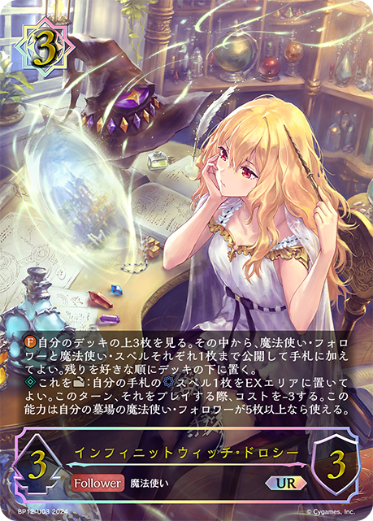
主BP12-037/BP12-U03/EBD02-002：インフィニットウィッチ・ドロシー主卡组 × 2 主BP12-050/EBD02-019/PR-411：連鎖する雷主卡组 × 1
主BP12-050/EBD02-019/PR-411：連鎖する雷主卡组 × 1 主BP15-053/PR-390：真実の隠者主卡组 × 3
主BP15-053/PR-390：真実の隠者主卡组 × 3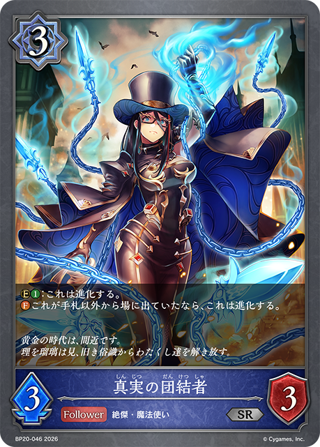
主BP20-046：真実の団結者主卡组 × 1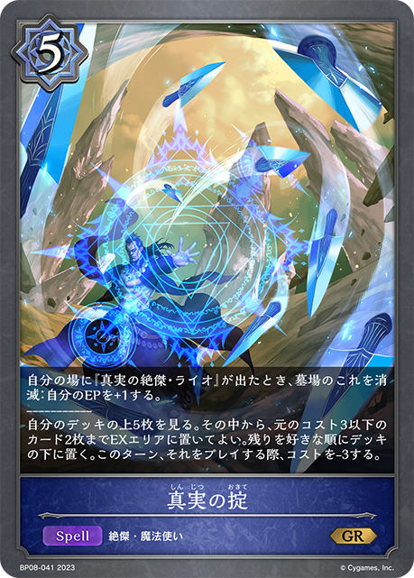
主BP08-041/BP08-P09：真実の掟主卡组 × 3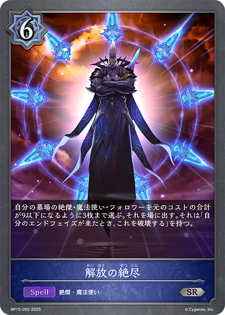
主BP15-050/BP15-P12：解放の絶尽主卡组 × 1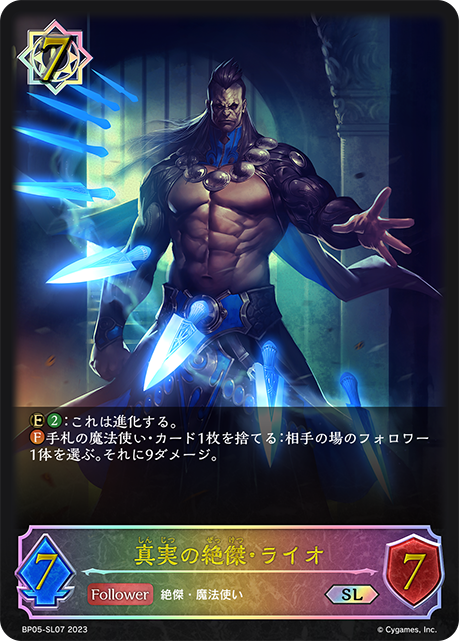
主BP05-035/BP05-SL07/BP20-R05：真実の絶傑・ライオ主卡组 × 3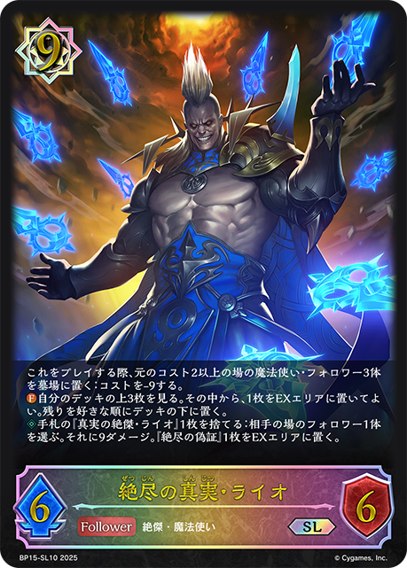
主BP15-038/BP15-SL10：絶尽の真実・ライオ主卡组 × 3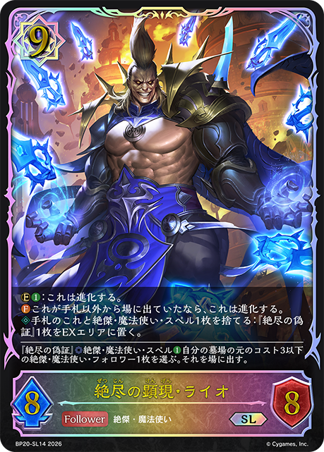
主BP20-042/BP20-SL14：絶尽の顕現・ライオ主卡组 × 3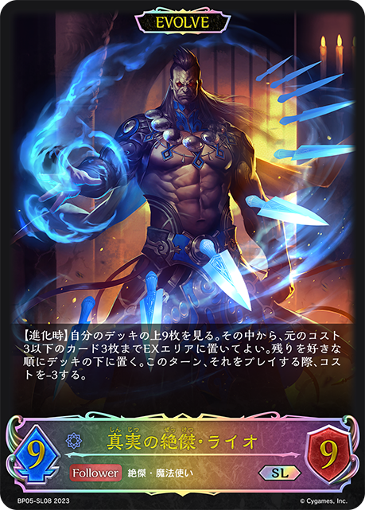
进BP05-036/BP05-SL08/BP20-R06：真実の絶傑・ライオ进化 × 1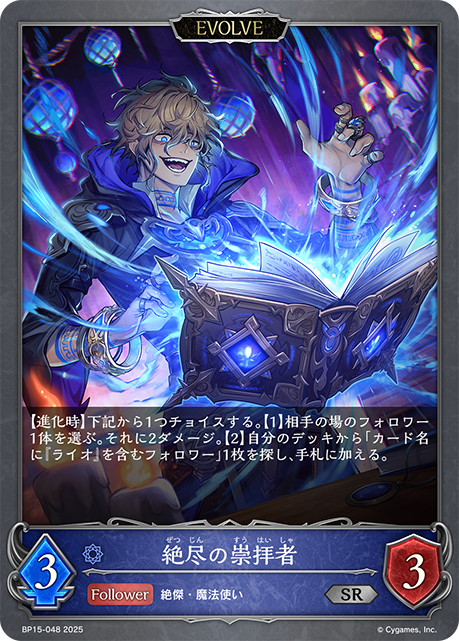
进BP15-048/BP15-P11：絶尽の崇拝者进化 × 3 进BP20-039/BP20-SL11/BP20-U03：真実の継承者・ヴェハリヤー进化 × 3
进BP20-039/BP20-SL11/BP20-U03：真実の継承者・ヴェハリヤー进化 × 3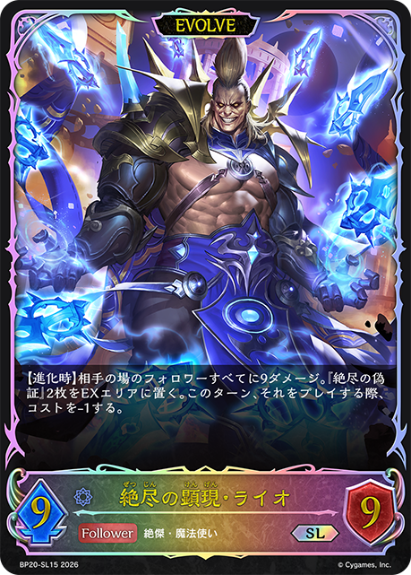
进BP20-043/BP20-SL15：絶尽の顕現・ライオ进化 × 1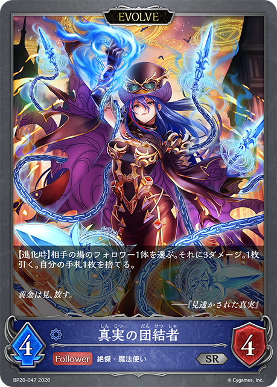
进BP20-047：真実の団結者进化 × 2+1
+1 +3
+3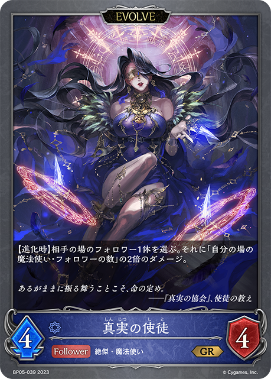
+2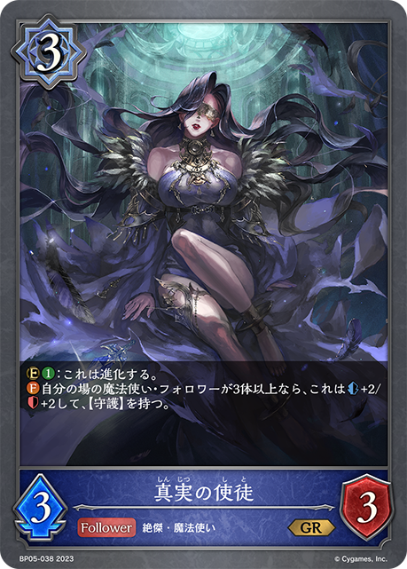
+2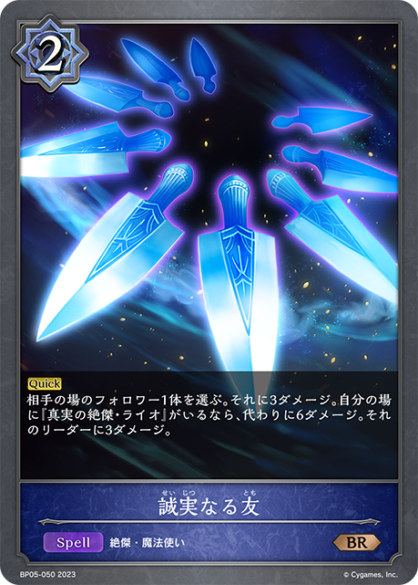
+2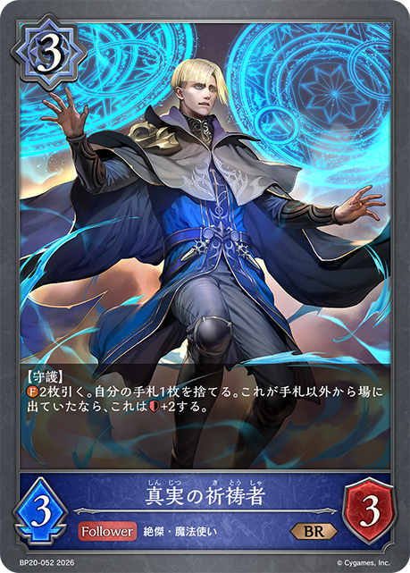
+2-2-1-1-1-1-1+3+2+2+1-2-1-1-1-1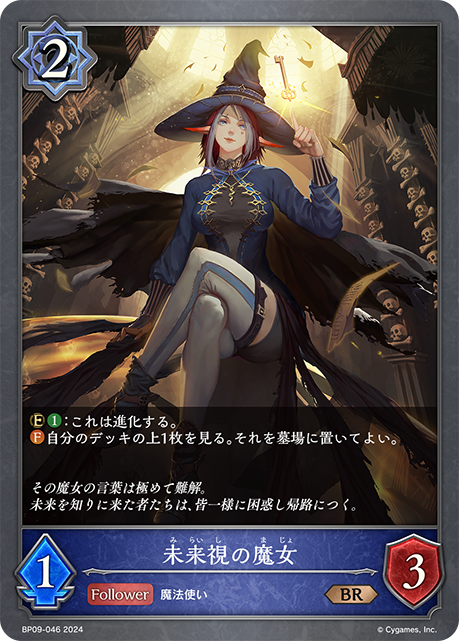
+2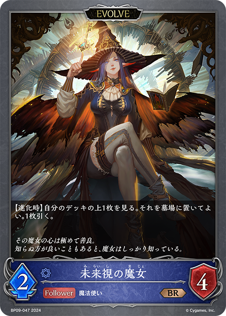
+1+1+1+1+1-2-2-1-1-1+1+1-1-1-1+1+1+1-2-1-1-1-1-1+1+1-1-1-1+3+3+2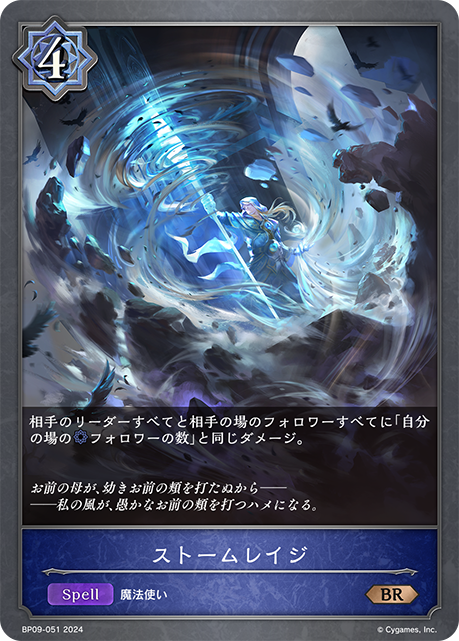
+2 +2+1-2-1-1-1-1-1-1-1+1+1+1+1-3-3-3-3-1-1-1
+2+1-2-1-1-1-1-1-1-1+1+1+1+1-3-3-3-3-1-1-1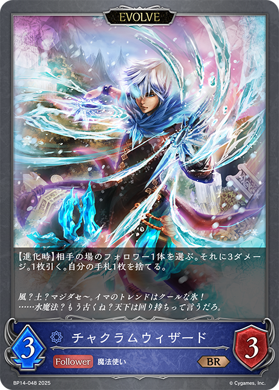
+2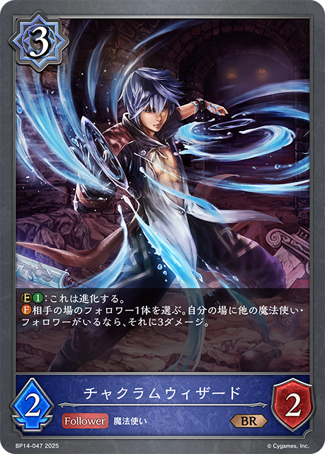
+2+1+3+2+1+1+1-2-1 +3+2+2+1+1-2-1-1-1+1+1-1-1-1-2-2-1-1+1+1+1+1-2-2-1-1+1-2-1-1-1+1+1+2+1+1+1+1+1+1
+3+2+2+1+1-2-1-1-1+1+1-1-1-1-2-2-1-1+1+1+1+1-2-2-1-1+1-2-1-1-1+1+1+2+1+1+1+1+1+1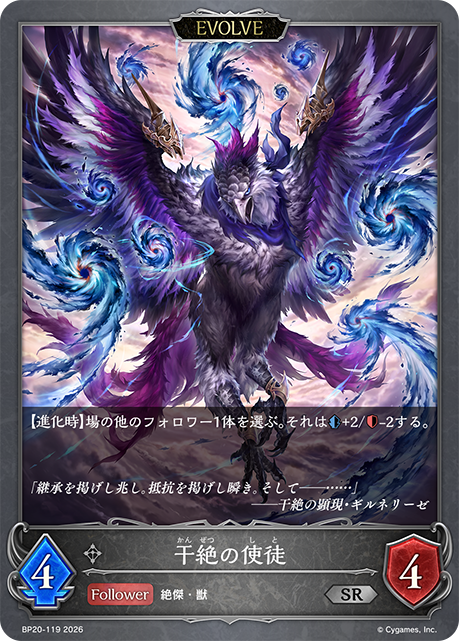
+1+1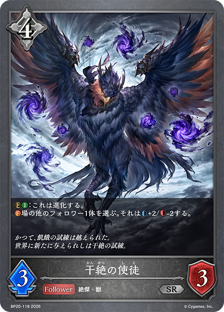
+1-2-1-1+1+1+1-2-2-1-1-1+3+2+2+2+2-2-1-1-1-1-1-1-1+3 +2+2+2+1-2-2-1-1-1-1
+2+2+2+1-2-2-1-1-1-1| 图片 | 平均张数 | 使用率 | 0张比例 | 1张比例 | 2张比例 | 3张比例 |
|---|---|---|---|---|---|---|
| 3.00 | 100.0% | 0.0% | 0.0% | 0.0% | 100.0% | |
|
3.00 | 100.0% | 0.0% | 0.0% | 0.0% | 100.0% |
|
3.00 | 100.0% | 0.0% | 0.0% | 0.0% | 100.0% |
| 2.97 | 100.0% | 0.0% | 0.0% | 2.8% | 97.2% | |
| 2.94 | 100.0% | 0.0% | 0.0% | 5.6% | 94.4% | |
| 2.86 | 100.0% | 0.0% | 0.0% | 13.9% | 86.1% | |
|
2.86 | 97.2% | 2.8% | 2.8% | 0.0% | 94.4% |
| 2.67 | 97.2% | 2.8% | 2.8% | 19.4% | 75.0% | |
| 1.81 | 97.2% | 2.8% | 25.0% | 61.1% | 11.1% | |
|
1.06 | 97.2% | 2.8% | 88.9% | 8.3% | 0.0% |
| 2.81 | 94.4% | 5.6% | 0.0% | 2.8% | 91.7% | |
| 2.72 | 94.4% | 5.6% | 0.0% | 11.1% | 83.3% | |
| 1.92 | 80.6% | 19.4% | 2.8% | 44.4% | 33.3% | |
| 1.08 | 66.7% | 33.3% | 33.3% | 25.0% | 8.3% | |
|
1.64 | 63.9% | 36.1% | 0.0% | 27.8% | 36.1% |
| 0.58 | 41.7% | 58.3% | 25.0% | 16.7% | 0.0% | |
| 0.69 | 36.1% | 63.9% | 5.6% | 27.8% | 2.8% | |
| 0.39 | 30.6% | 69.4% | 22.2% | 8.3% | 0.0% | |
| 0.44 | 25.0% | 75.0% | 11.1% | 8.3% | 5.6% | |
|
0.47 | 16.7% | 83.3% | 0.0% | 2.8% | 13.9% |
| 0.31 | 16.7% | 83.3% | 2.8% | 13.9% | 0.0% | |
| 0.28 | 11.1% | 88.9% | 0.0% | 5.6% | 5.6% | |
|
0.17 | 5.6% | 94.4% | 0.0% | 0.0% | 5.6% |
| 0.14 | 5.6% | 94.4% | 0.0% | 2.8% | 2.8% | |
| 0.11 | 5.6% | 94.4% | 0.0% | 5.6% | 0.0% | |
|
0.11 | 5.6% | 94.4% | 0.0% | 5.6% | 0.0% |
| 0.06 | 2.8% | 97.2% | 0.0% | 2.8% | 0.0% | |
| 0.06 | 2.8% | 97.2% | 0.0% | 2.8% | 0.0% | |
| 0.03 | 2.8% | 97.2% | 2.8% | 0.0% | 0.0% |
| 图片 | 平均张数 | 使用率 | 0张比例 | 1张比例 | 2张比例 | 3张比例 |
|---|---|---|---|---|---|---|
| 2.97 | 100.0% | 0.0% | 0.0% | 2.8% | 97.2% | |
| 1.86 | 100.0% | 0.0% | 22.2% | 69.4% | 8.3% | |
|
2.69 | 97.2% | 2.8% | 0.0% | 22.2% | 75.0% |
| 1.47 | 94.4% | 5.6% | 44.4% | 47.2% | 2.8% | |
| 0.50 | 25.0% | 75.0% | 5.6% | 13.9% | 5.6% | |
| 0.19 | 11.1% | 88.9% | 2.8% | 8.3% | 0.0% | |
| 0.08 | 5.6% | 94.4% | 2.8% | 2.8% | 0.0% | |
| 0.06 | 5.6% | 94.4% | 5.6% | 0.0% | 0.0% | |
|
0.06 | 2.8% | 97.2% | 0.0% | 2.8% | 0.0% |
| 0.03 | 2.8% | 97.2% | 2.8% | 0.0% | 0.0% |